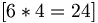
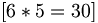
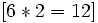
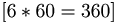
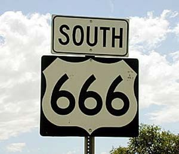

Número de la Bestia
 De: La Frikipedia, la enciclopedia extremadamente seria.
De: La Frikipedia, la enciclopedia extremadamente seria.
De la serie grandes personajes:
¿Qué putas es? ¿un 666 o un 999?
| Nacimiento
|
666 D.C. (Después de Cristo)
|
| Muerte
|
Nunca Muere!
|
| Ocupación
|
Músico, Matemático, Maricón o cualquiera que empieze por la M
|
| Nacionalidad
|
Debajo de tu ordenador
|
| Malo o bueno
|
Mucho peor que Carmen de Mairena
|
| Atentados contra la humanidad
|
Dominar el mundo con buena música e inventar la marihuana
|
| Religión
|
Ironmaidenismo
|
| Notas
|
Six six six, the number of the beast!
|
Para otros usos de este término/definición/cosa, véase Número (desambiguación).
«Six six six, the number of the beast!!!»
~ Bruce Dickinson sobre este número
«Zeiz, zeiz, zeiz, la zifra de Zatán»
~ Quiste Sebáceo plagiando a Bruce Dickinson
«Six Hundred Sixty Six Voices Inside!!!»
~ Dark Funeral sobre este número
«¿Qué significa el "999"?»
~ Gilipollas sobre el número de la bestia
Este místico número, mas conocido como The Number of the Beast por Bush, El Numero Ordinario por Dios, y el numero de Telepizza por Belén Esteban, tiene el misterio matemático de ir antes del 667 y del 665. Nacido en un huevo de panda, el número de la bestia es el responsable de muchos sucesos grandiosos a lo largo de la historia, como la muerte de Hitler tu abuela.
Nacimiento
Corría muy rápido el año 667 A.C. (en esa época los años tenían 2 meses en vez de 12) y fue cuando un sucio panda hermafrodita puso un huevo con forma extraña y nació una bestia que tenía tatuado al numero 666.
Dos días después, un científico israelita descubrió que el número tatuado en la bestia era el que le faltaba para completar el álbum de figuritas de números. Y cuando lo completó la bestia se rebeló, causando el Primer Impacto.
Era de la Bestia
Tras años de follar a prostitutas holandesas, decidio enderezar su vida, estudió Numerología Para Tontos, con lo cual deseaba encontrar el motivo de su existencia y no terminar convertido en un Emo.
Luego de largas jornadas de estudio llegó a la conclusión de que el significado de la vida tenía una estrecha relación con el número 42, y que el número 666 representaba al cataclismo.
Crónicas de la Bestia
Inició su búsqueda del número 42, para aniquilarlo tomar el té y charlar.
Se dice que cerca de las montañas de Pandemonium IV se encontró con su letal enemigo y tras una intensa lucha la bestia salió venciendo.
Características del Número
- Cuando los años eran de dos meses decidió multiplicar el número en una de sus cifras para que quede más lindo.
- El tiempo fue predicho por el número, haciendo los minutos de 60 segundos, las horas de 60 minutos, los días de 24 horas , los meses en 30 días  (aunque algunos se enloquecieron), los años en 12 meses  y en 365 días.
- Los huevos se compran por docena, y muchas veces en medias docenas, dando así 6 huevos.
- En la naturaleza los panales tienen celdas de 6 lados.
- La suma de todos los números da como resultado la mayoría de edad en muchos países, motivo por el cual es un número peligroso.
- En matemáticas un círculo tiene 360º dado que , un llano tiene 180º que es la suma de los tres 6 y agregando un 0.
- En las culturas orientales el 666 es un número anecdótico, aunque nunca lo pudieron completar por la habilidad de usar 66. Al girar un 6 queda el 69 (ying-yang (un símbolo que ni ellos entienden).
- El hijo varón número 66 tiene la habilidad de controlar el tiempo, mientras que el hijo varón 666 tiene tres testículos.
- Un hombre tiene 666 razones para estar con una mujer.
- Una mujer tiene 666 razones para estar con una mujer.
- Un friki tiene 666 razones para estar con un ordenador.
- Las cabras nacidas en navidad son geniales por 666 razones.
- El videojuego Doom usa el puerto 666 para jugar con otro jugador vía TCP
- Si sumamos las cifras 666 nos da 18, que no es otro número que el número que llevaba Penosete Gibernau en la "amoto" más 3, que es el número de veces que ha acabado una carrera sin caerse en Moto GP.
Apariciones en la historia
- El número de pasajeros de Cristóbal Colón
- La cantidad de versiones de la Mona Lisa que hay en el mundo.
- La cantidad de ojos que tuvo el cíclope antes de que se los sacaran.
- Microsoft sacó 666 versiones de Windows.
- McGyver puede hacer 666 cosas con una lamparita quemada.
- Hay 666 máquinas del tiempo actualmente funcionando.
- El hijo de Cthulhu nació en el año 666 d.C.
- El episodio 666 de Los Simpson va a ser el último...de la temporada 20
- El número de mandamientos que tenia que haber en un principio, lo que Moisés se cansó a los 10.
- El número de pajas que te has hecho en los últimos 5 meses
- El dia en el que nacio Guillermo Puertas
Números relacionados
 Carretera que lleva a la casa de
Ozzy Osbourne la Bestia
- 6/6/666: Es el cumpleaños de la bestia
- 665: los de Megadeth cuando estaban grabando algunos discos, y siendo vecinos de la Bestia
- 6: Es el número de hermanos que tiene
- 668: El vecino del portal de al lado de la Bestia
- 670: El Número de la Bestia, aproximado
- DCLXVI: El Número Romano de la Bestia
- 666,0000: El Número de la Bestia en alta precisión
- six-six-six: La bestia en gringolandia
- 0,666: El Número de la Mini-Bestia
- 1/666: El Denominador Común de la Bestia
- 666 sqrt(-1): El Número Imaginario de la Bestia
- 1010011010: El Número Binario de la Bestia
- 29A: El Número Hexadecimal de la Bestia
- -666: El Número Negativo de la Bestia
- 00666: El Código Postal de la Bestia
- 665,95: € El Precio de la Bestia
- 699,25 €: El Número de la Bestia más impuestos en Canarias (5%)
- 769,95 €: El Número de la Bestia, incluyendo baterías y accesorios
- 656,66 €: El Número de la Bestia en oferta
- 646,66 €: El Número de la Bestia en oferta, la semana siguiente
- 666 €: El número de euro-infiernos que tiene en su cuenta de ahorro
- 666666 €: La contraseña de su cuenta de ahorro
- 1 €: El Número de la Bestia en el Todo a un Euro
- Repsol 666: La Gasolina de la Bestia
- A-666,AP-666 y N-666: La Autovía, Autopista y Carretera Nacional de la Bestia
- 665: El Hermano Mayor de la Bestia
- 667: El Hermano Pequeño de la Bestia
- 666 t. max.: La Tara máxima admitida de la Bestia
- 666 ºC: Temperatura del horno para cocinar a las Bestias
- 666 mg.: El Mínimo Diario Recomendado de Consumo de la Bestia
- 66,6 Kg.: El peso de la bestia.
- 6,66%: Interés de un préstamo hipotecario en el Banco del Infierno, con un depósito inicial de 666 euros
- 900-666-666: El Número Gratuito de la Bestia
- 806-666-666: El Número del Sexo de la Bestia
- 666-666-666: Spawnear a la Bestia en GTA IV o sus Expansiones.
- Lotus 6-6-6: La Hoja de Cálculo de la Bestia
- Word 6.66: El Tratamiento de Textos de la Bestia
- i66686: La CPU de la Bestia
- 666i: El BMW de la Bestia, con motor de 666 cv
- A/66-666-6666: El Número de la Seguridad Social de la Bestia
- 666.com: La URL de la Bestia
- Fórmula 666: Competición automovilística de la Bestia
- 666999: La bestia frente a otra bestia de cabeza. También pose erótica de la bestia.
- WD-666: El lubricante de la Bestia
- 66.6 MHz: La radio FM de la Bestia
- 666 kHz: La radio AM de la Bestia
- 666 km : la distacia de viaje de la bestia
- 666 km/h: la velocidad maxima que se puede desplazar la Bestia en carretera
- 66,6 km/h: la velcidad maxima que se puede desplazar la bestia en zona urbana
- 666 hab: poblacion de habitantes en el pais de la Bestia
- 666 kbps: la velocidad del modem de coneccion de la bestia
- 666 mb: espacio requerido para instalar el software la bestia 6.6.6
- 666 g/cm3: la densidad de la bestia
- $666 pesos: la cantidad de dinero en monedas shilenas que puede llegar a tener la bestia en chile al tener las monedas de 1,5, 10, 50, 100 y 500
- area 666: sector secreto que la bestia utilza para sus investigaciones secretas.
- 333: El número de la bestia partido en dos por una patada giratoria de Chuck Norris.
- 666: VIVIVI en romano = WWW
- 666 min: Duración del disco de la Bestia en un CD de 666 mb.
- 6+6=6: Es el numero de la bestia en decomposicion matematicamente
Ver también
Autor(es):
- Krusher
- Doctor grijander
- Geni
- Homer Tunder
- Frikiman
- Viento
- Barbazeus Motsand
- Azulejos
- Juancho
- Oscarurbina
Frikipedia 2005-2016, Licencia
GFDL 1.2 - Extraído por FrikiLeaks